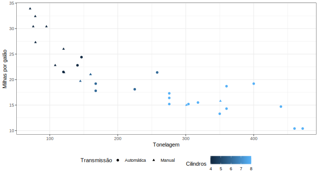

4.4 Modelando a variância da normal
Verificar as suposições dos modelos é muito importante quando fazemos inferência estatística. Em particular, a suposição de homocedasticidade4 dos modelos de regressão linear é especialmente importante, pois modifica o cálculo de erros padrão, intervalos de confiança e valores-p.
Neste post, vou mostrar três pacotes do R que ajustam modelos da forma
\[ Y_i = \beta_0 + \sum_{k=1}^p\beta_kx_{ik} + \epsilon_i, \ i = 1,\ldots,n\]
\[ \epsilon_{i} \sim \textrm{N}(0,\sigma_i), \ i = 1,\ldots,n \ \textrm{independentes, com }\sigma_i^2 = \alpha x_i^2. \]
Além de mostrar como se faz, também vou ilustrar o desempenho dos pacotes em um exemplo simulado. O modelo que gerará os dados do exemplo terá a seguinte forma funcional
\[ Y_i = \beta x_i + \epsilon_i, \ i = 1,...n \] \[ \epsilon_i \sim N(0, \sigma_i)\text{ independentes, com }\sigma_i = \alpha\sqrt{|x_i|},\]
e os parâmetros do modelo serão os valores \(\beta = 1\) e \(\alpha = 4\). A heterocedasticidade faz com que os pontos desenhem um cone ao redor da reta de regressão.

4.4.1 Usando o pacote gamlss
Quando se ajusta um GAMLSS, você pode modelar os parâmetros de locação, escala e curtose ao mesmo tempo em que escolhe a distribuição dos dados dentre uma grande gama de opções. Escolhendo a distribuição normal e modelando apenas os parâmetros de locação e escala, o GAMLSS ajusta modelos lineares normais com heterocedasticidade.
No código abaixo, o parâmetro formula = Y ~ X-1 indica que a função de regressão será constituída por um preditor linear em X sem intercepto. Já o parâmetro sigma.formula = ~X2-1 indica que o desvio padrão será modelado por um preditor linear em X2 (ou raiz de X), também sem intercepto.
FALSE GAMLSS-RS iteration 1: Global Deviance = 17872.29
FALSE GAMLSS-RS iteration 2: Global Deviance = 17870.67
FALSE GAMLSS-RS iteration 3: Global Deviance = 17870.67Conforme descrito no sumário abaixo, a estimativa de alfa está muito abaixo do valor simulado.
FALSE ******************************************************************
FALSE Family: c("NO", "Normal")
FALSE
FALSE Call: gamlss::gamlss(formula = Y ~ X - 1, sigma.formula = ~X2 -
FALSE 1, family = NO(), data = dataset)
FALSE
FALSE Fitting method: RS()
FALSE
FALSE ------------------------------------------------------------------
FALSE Mu link function: identity
FALSE Mu Coefficients:
FALSE Estimate Std. Error t value Pr(>|t|)
FALSE X 0.996942 0.005131 194.3 <2e-16 ***
FALSE ---
FALSE Signif. codes: 0 '***' 0.001 '**' 0.01 '*' 0.05 '.' 0.1 ' ' 1
FALSE
FALSE ------------------------------------------------------------------
FALSE Sigma link function: log
FALSE Sigma Coefficients:
FALSE Estimate Std. Error t value Pr(>|t|)
FALSE X2 0.1791449 0.0009606 186.5 <2e-16 ***
FALSE ---
FALSE Signif. codes: 0 '***' 0.001 '**' 0.01 '*' 0.05 '.' 0.1 ' ' 1
FALSE
FALSE ------------------------------------------------------------------
FALSE No. of observations in the fit: 1000
FALSE Degrees of Freedom for the fit: 2
FALSE Residual Deg. of Freedom: 998
FALSE at cycle: 3
FALSE
FALSE Global Deviance: 17870.67
FALSE AIC: 17874.67
FALSE SBC: 17884.49
FALSE ******************************************************************4.4.2 Usando o pacote dglm
Quando se ajusta um Modelo Linear Generalizado Duplo (MLGD em português e DGLM em inglês), você tem uma flexibilidade parecida com a de um GAMLSS. Entretanto, você não pode definir um modelo para a curtose e a classe de distribuições disponível é bem menor.
O código abaixo, similar ao utilizado para ajustar o GAMLSS, ajusta um DGLM aos dados simulados.
Novamente, verifica-se que o alfa estimado está muito distante do verdadeiro alfa.
FALSE
FALSE Call: dglm(formula = Y ~ X - 1, dformula = ~X2 - 1, family = gaussian,
FALSE data = dataset, method = "reml")
FALSE
FALSE Mean Coefficients:
FALSE Estimate Std. Error t value Pr(>|t|)
FALSE X 0.9969432 0.008981392 111.001 0
FALSE (Dispersion Parameters for gaussian family estimated as below )
FALSE
FALSE Scaled Null Deviance: 27197.48 on 1000 degrees of freedom
FALSE Scaled Residual Deviance: 3090.08 on 999 degrees of freedom
FALSE
FALSE Dispersion Coefficients:
FALSE Estimate Std. Error z value Pr(>|z|)
FALSE X2 0.3577322 0.001166004 306.8019 0
FALSE (Dispersion parameter for Gamma family taken to be 2 )
FALSE
FALSE Scaled Null Deviance: 1628.301 on 1000 degrees of freedom
FALSE Scaled Residual Deviance: 6526.59 on 999 degrees of freedom
FALSE
FALSE Minus Twice the Log-Likelihood: 17870.76
FALSE Number of Alternating Iterations: 184.4.3 Usando o pacote rstan
Stan é uma linguagem de programação voltada para descrever e manipular objetos probabilísticos, como por exemplo variáveis aleatórias, processos estocásticos, distribuições de probabilidades etc. Essa linguagem foi projetada para tornar intuitivo e simples o ajuste de modelos estatísticos. Em particular, a forma de descrever modelos bayesianos é bem cômoda.
O stan possui várias interfaces para R. A mais básica é o rstan, que será utilizada aqui. A principal função desse pacote é a função rstan, que possui dois parâmetros básicos:
- um parâmetro
model_code =, que recebe um código que descreve o modelo na linguagemstan. - um parâmetro
data =, que recebe uma lista contendo os inputs do modelo, tais como dados coletados, parâmetros de distribuições a priori, etc.
Embora esse seja o mínimo que a função precisa, também podemos passar outras componentes. O parâmetro verbose = FALSE faz com que a função não imprima nada enquanto roda e o parâmetro control = list(...) passa uma lista de opções de controle para o algoritmo de ajuste.
O retorno da função stan() é um objeto do tipo stanfit, que pode ser sumarizado da mesma forma que outros modelos em R, utilizando a função summary() e a função plot().
O código abaixo ilustra a aplicação da função stan() ao nosso exemplo.
A figura abaixo descreve os intervalos de credibilidade obtidos para cada parâmetro do modelo. O ponto central de cada intervalo representa as estimativas pontuais dos parâmetros. Como se nota, as estimativas do modelo utilizando stan estão bem próximas dos valores verdadeiros.
Uma regressão linear é homocedástica quando a variabilidade dos erros não depende das covariáveis do modelo.↩